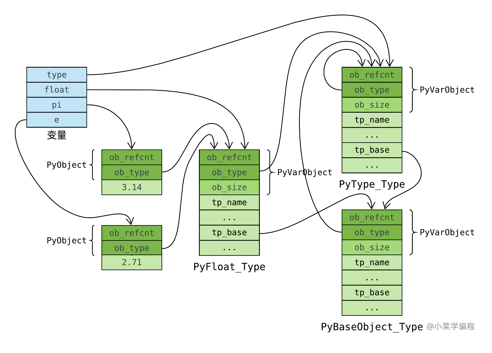
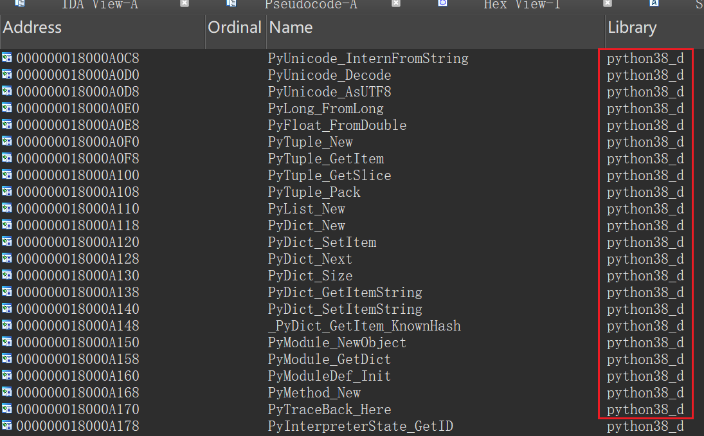
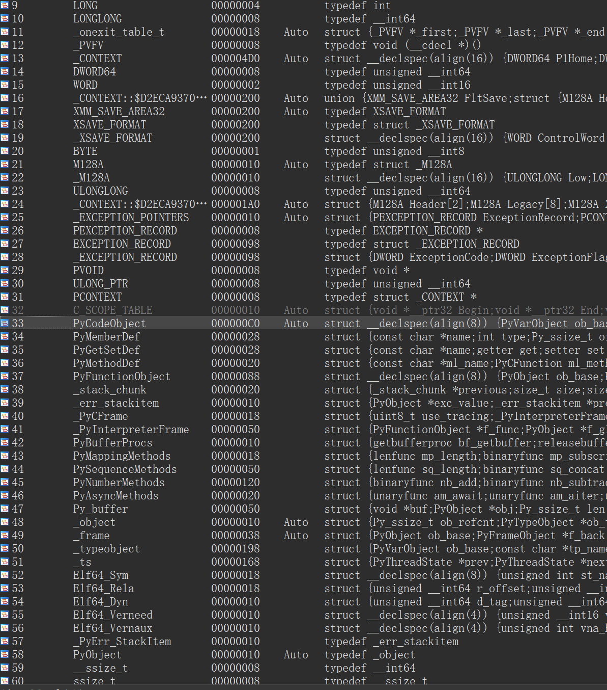

为什么要写这本书
作为一名逆向+PWN低手，据我在我所能接触到的比赛中观察到，随着CTF赛事的不断发展，逆向中非C/C++的逆向越来越多，譬如go、rust、python等语言逆向。在今年大大小小的比赛中，都出现了非C/C++的逆向和PWN（国赛go语言栈溢出、pyd逆向，长城杯pyd、pythonexe逆向等等），其中python逆向最是热门，也最是特殊的。
Python的逆向十分特殊，它分为多种逆向，它分为pythonexe逆向，pyc逆向，和pyd逆向，其中pyc逆向较为简单，可以利用pycdc等脚本一比一的转化为python代码，而对于pyd和pythonexe逆向来说，虽然它和我们正常逆向差不多，但是其中存在不少python自定义的固定结构，这些结构是由Cython来生成的，他们存在着一定规律，如果不能很好了解他们，便会加大我们逆向的难度，反之，则会让我们的逆向变得轻而易举。
而市面上并没有什么教程来系统的教授如何做python逆向，每个人都在“浑水摸鱼”般的进行学习，内容极其分散，导致不能很好的学习，于是这本书便出现了，它旨在创建一个共同的平台，来教授/交流Python逆向的经验、脚本、工具。
当然这本书仅仅是写好了一个框架，还有很多内容还并没有很好的完善，加上作者的能力有限，不能做到面面俱到，在这里还麻烦各位师傅多多提交issue和pr，共同构造这本CTFRePyBook。
贡献📕
感谢以下成员为CTFRePyBook做出的贡献！
本书作者：dDostalker (dDostalker) (github.com) 如有问题，可随时联系我 QQ：3824970852
Python基础
知己知彼，百战百胜，我们先了解敌人的结构，才能更好的迎敌，所以在这一章内容中，我们将先介绍python一下相关的知识：
- python生成的文件
- python的魔法方法
- pvm虚拟机以及python代码是如何执行的
- todo!()
对于python这种需要虚拟机的动态语言来说，了解python本身的特性和实现是非常关键的，所以以上知识对于逆向python有着十分重要的作用，建议师傅们优先阅读此部分内容。
Python基础语法🚧
todo!()
认识Python生成的文件
python虽然是解释型语言，但是在很多情况仍然需要涉及到纯文本源码以外的语言，譬如pyc，pyd……在逆向过程种，这些文件也是我们的需要逆向的部分（甚至比直接给出的py源码更重要），以下是常见的python文件类型：
py文件
py格式文件，本质是文本文件，通常指的是Python源代码文件，它包含了Python程序执行的指令和代码，在这里不多赘述。
pyc文件
pyc文件是常见的python逆向的点，pyc的逆向可以通过利用使用pycdc等工具，可以将pyc一比一的还原成python代码，所以逆向的难度主要在阅读python代码，在本教程中将不过多的针对此类文件 。
.pyc 文件是Python源代码文件（.py 文件）编译后的字节码文件。（既不是直接可执行文件也不是文本文件，字节码是一种中间表示形式，可以在Python虚拟机上执行）
当Python解释器首次导入一个模块时，它会将模块的源代码（.py 文件）编译成字节码，并将生成的字节码保存到 .pyc 文件中。执行后字节码文件通常保存在 __pycache__ 目录下，文件名格式为 module_name.cpython-xx.pyc，其中 xx 是Python版本号。那么pyc是怎么存储其中内容的呢？这幅图应该能很好的解决师傅们疑惑
pyc和所有文件一样，会有一个文件头，而pyc的文件头就如上图所示
- 魔数：是由一个 2 字节的整数，这个两个字节的整数在不同的 python 版本还不一样
- Bit Field ：这个字段的主要作用是为了将来能够实现复现编译结果，详细内容可以参考 PEP552-Deterministic pycs 。这个字段在 python2 和 python3 早期版本并没有（python3.5 还没有），在 python3 的后期版本这个字段才出现的。
- CodeObject：这里可以先等一等，我们后续会讲到
关于
.pyc文件的版本兼容性 还记得前面提到的魔数吗？文件是与Python版本相关的，不同版本的Python生成的字节码文件不兼容例如，Python 3.8生成的 .pyc 文件不能在Python 3.7环境中运行。
看到这里估计很多师傅已经想要生成一个pyc试一试了，而生成pyc的方法也很简单，我们创建一个新的文件，然后输入下面的代码执行即可。
import compileall
compileall.compile_dir('/path/to/your/python/files')
pyo文件（py3.5）之前
优化后的字节码文件：在Python 3.5及之前版本中，使用 -O 或 -OO 选项编译生成的优化字节码文件。
pyd文件（重点）
Python专属动态链接库：类似于Windows平台上的DLL文件，包含预编译的Python扩展模块。其FFI是由自己规定的一套接口，而他的生成方法也相对困难一点，首先，你需要一个打包设置的setup.py文件，在代码文件夹同级目录上
目录如下：
:.
│ setup.py
│
└─pythonProject
talker.py
setup.py文件如下：
from distutils.core import setup
from Cython.Build import cythonize
setup(
name='函数名',
ext_modules=cythonize("包含文件名"),
)
在终端中输入python setup.py build_ext --inplace，会在同级代码文件夹里生成build和pyd文件，在代码中会生成c文件。如果要生成debug文件，则在后面在加上一个--debug
生成后目录成为
:.
│ setup.py
│ talker.cp38-win_amd64.pdb #调试信息
│ talker.cp38-win_amd64.pyd #(我们需要的文件)
│ vc140.pdb # 调试信息
│
├─build
│ └─temp.win-amd64-3.8
│ └─Debug
│ └─python
│ └─ddos
│ └─pythonProject
│ talker.cp38-win_amd64.exp
│ talker.cp38-win_amd64.lib
│ talker.obj
│
└─pythonProject
talker.py
talker.c #py转化为对应的c代码
根据生成过程我们不难发现，python生成pyd的本质是先生成c代码，然后在进行编译，理解了这一点，pyd的逆向会简单不少
注意！！
1.python本身不支持生成pyd，需要我们安装Cython库
pip install Cython2.在linux上运行是自带debug信息的，这一点不用担心。但是在windows上我们需要在后边加--debug才能进行debug编译，如果出现以下报错，很可能是由于没有debug symbol和binary导致的，可以参考 附件2：python安装配置表的安装选项
C:\Program Files\Microsoft Visual Studio\2022\Community\VC\Tools\MSVC\14.38.33130\bin\HostX86\x64\link.exe /nologo /INCREMENTAL:NO /LTCG /DEBUG:FULL /DLL /MANIFEST:EMBED,ID=2 /MANIFESTUAC:NO /LIBPATH:C:\VSC\python\libs /LIBPATH:C:\VSC\python\PCbuild\amd64 "/LIBPATH:C:\Program Files\Microsoft Visual Studio\2022\Community\VC\Tools\MSVC\14.38.33130\ATLMFC\lib\x64" "/LIBPATH:C:\Program Files\Microsoft Visual Studio\2022\Community\VC\Tools\MSVC\14.38.33130\lib\x64" "/LIBPATH:C:\Program Files (x86)\Windows Kits\NETFXSDK\4.8\lib\um\x64" "/LIBPATH:C:\Program Files (x86)\Windows Kits\10\lib\10.0.22621.0\ucrt\x64" "/LIBPATH:C:\Program Files (x86)\Windows Kits\10\\lib\10.0.22621.0\\um\x64" /EXPORT:PyInit_talker build\temp.win-amd64-3.8\Debug\python\ddos\pythonProject\talker.obj /OUT:D:\python\ddos\talker.cp38-win_amd64.pyd /IMPLIB:build\temp.win-amd64-3.8\Debug\python\ddos\pythonProject\talker.cp38-win_amd64.lib LINK : fatal error LNK1104: 无法打开文件“python38_d.lib”
so文件
共享对象文件：在Unix-like系统（如Linux）上的接口，包含预编译的Python扩展模块。生成方法同pyd
egg 文件🚧
Python包分发格式：一种归档文件格式，用于分发Python包，类似于Java的JAR文件
whl文件🚧
Python Wheel文件：一种现代的Python包分发格式，比 .egg 文件更高效，支持二进制分发。
引用
python的魔术方法🚧
todo!()
PVM字节码
在前面的章节我们提到过，python的运行是将pvm可以识别的字节码进行运行，那么什么是pvm和字节码呢？
PVM
PVM就像一个专门设计用来运行字节码的特殊引擎（有java逆向基础的师傅们可以参考JVM）。它逐条读取字节码指令并执行，从而使你的Python程序运行起来。你可以理解为他是一个为了解决迁移问题的小虚拟机。
字节码
如果把PVM比作虚拟机的话，那么字节码就是汇编了，简而言之，编译过程将你可读的代码转换为PVM能够理解和更高效执行的形式。
查看字节码
Python 提供了一个强大的工具，称为 dis 模块，该模块允许您反汇编 Python 函数或甚至整个脚本，转化为字节码。
我们写这样一段代码
def dDostalker():
print('written by dDostalker')
要查看此函数的字节码，我们使用 dis.dis() 函数：
import dis
dis.dis(dDostalker)
之后便打印出我们想要的字节码了
3 0 LOAD_GLOBAL 0 (print)
2 LOAD_CONST 1 ('written by dDostalker')
4 CALL_FUNCTION 1
6 POP_TOP
8 LOAD_CONST 0 (None)
10 RETURN_VALUE
常见字节码指令
LOAD_CONST：将一个常量值（如数字、字符串或None）加载到栈顶。例如，LOAD_CONST 1 ('Hello, ')将字符串“Hello, ”加载到栈中。LOAD_FAST：将局部变量的值加载到栈中。示例：LOAD_FAST 0 (x)将局部变量x的值加载到栈中。STORE_FAST：将栈顶的值取出并存储到局部变量中。例如，STORE_FAST 1 (y)将栈顶的值存储到变量y中。BINARY_ADD：从栈中取出顶部的两个值，将它们相加，并将结果推回栈中。例如，在指令序列LOAD_FAST 0 (x)、LOAD_CONST 1 (5)、BINARY_ADD中，x和 5 的值被相加，结果被放置在栈上。POP_TOP：从栈中移除顶部的值，有效地丢弃它。RETURN_VALUE：返回栈顶的值，有效地结束函数的执行。JUMP_IF_FALSE_OR_POP：如果栈顶的值为假，则此指令跳转到指定的指令。否则，它从栈中弹出该值。JUMP_ABSOLUTE：无条件跳转到指定的指令。
基本 Python 结构的字节码示例
让我们看看这些指令在基本 Python 结构中的使用：
条件语句（If-Else）
def check_positive(x):
if x > 0:
return "Positive"
else:
return "Non-positive"
字节码：
2 0 LOAD_FAST 0 (x)
2 LOAD_CONST 1 (0)
4 COMPARE_OP 4 (>)
6 POP_JUMP_IF_FALSE 14
3 8 LOAD_CONST 2 ('Positive')
10 RETURN_VALUE
5 >> 12 LOAD_CONST 3 ('Non-positive')
14 RETURN_VALUE
在上面的字节码中：
LOAD_FAST 0 (x)：将变量x加载到栈上。LOAD_CONST 1 (0)：将常量0加载到栈上。COMPARE_OP 4 (>)：比较栈顶的两个值（x > 0）。POP_JUMP_IF_FALSE 14：如果比较结果为假，则跳转到指令 14。LOAD_CONST 2 ('Positive')：如果x > 0，则将字符串'Positive'加载到栈上。RETURN_VALUE：返回栈上的值。LOAD_CONST 3 ('Non-positive')：如果x <= 0，则将字符串'Non-positive'加载到栈上。
循环（For 循环）
def sum_list(numbers):
total = 0
for num in numbers:
total += num
return total
字节码:
2 0 LOAD_CONST 1 (0)
2 STORE_FAST 1 (total)
3 4 LOAD_FAST 0 (numbers)
6 GET_ITER
>> 8 FOR_ITER 12 (到 22)
10 STORE_FAST 2 (num)
4 12 LOAD_FAST 1 (total)
14 LOAD_FAST 2 (num)
16 INPLACE_ADD
18 STORE_FAST 1 (total)
20 JUMP_ABSOLUTE 8
>> 22 LOAD_FAST 1 (total)
24 RETURN_VALUE
现在，让我们来探讨一下字节码中发生了什么：
LOAD_CONST 1 (0)：将常量0加载到栈上，以初始化total。STORE_FAST 1 (total)：将0存储在变量total中。LOAD_FAST 0 (numbers)：将变量numbers加载到栈上。GET_ITER：获取numbers的迭代器。FOR_ITER 12 (to 22)：遍历numbers，完成后跳转到指令 22。STORE_FAST 2 (num)：将当前项存储在变量num中。LOAD_FAST 1 (total)：将total加载到栈上。LOAD_FAST 2 (num)：将num加载到栈上。INPLACE_ADD：将total和num相加（就地操作）。STORE_FAST 1 (total)：将结果存储回total中。JUMP_ABSOLUTE 8：跳回循环的开始处。LOAD_FAST 1 (total)：将total加载到栈上。RETURN_VALUE：返回total。
理解这些常见指令及其在不同 Python 结构中的使用，可以显著增强您分析字节码的能力，并深入了解 Python 的内部工作原理。
引用
Python和C对接的类型
在描述python接口的时候，我们谈到了python有着一套c特定的接口，而这个接口就是XXObject，由于C的参数数量固定，无法预设变量，参数类型确定等等，导致python和C语言对接需要一定的转换，需要提供更多的信息给C，才能使C/C++程序员能够在各个级别上对Python解释器的功能进行扩展。在使用C/C++对Python进行功能扩展之前和逆向，必须首先掌握Python解释所提供的C语言接口。
C语言正向开发py模块声明🚧
语言与语言之间，最难对接的莫过于类型，如果解决了类型的对接，就几乎解决了一半的问题
创建类型
首先就是基础类型，他们的特点是他们的类型是同一变量一致的（在这个变量中的所有内容类型相同）
基础类型
整数类型
PyObject* pInt = Py_BuildValue("i", 2003);
assert(PyInt_Check(pInt));
int i = PyInt_AsLong(pInt);
Py_DECREF(pInt);
浮点类型
PyObject* pFloat = Py_BuildValue("f", 3.14f);
assert(PyFloat_Check(pFloat));
float f = PyFloat_AsDouble(pFloat);
Py_DECREF(pFloat);
字符串类型
PyObject* pString = Py_BuildValue("s", "Python");
assert(PyString_Check(pString);
int nLen = PyString_Size(pString);
char* s = PyString_AsString(pString);
Py_DECREF(pString);
与他们不同的是元组和列表，他们其中的内容并不统一，类型多样，但是二者之间还是存在区别，元组不可扩展，列表可以进行扩展。
元组
PyObject* pTuple = PyTuple_New(3);
assert(PyTuple_Check(pTuple));
assert(PyTuple_Size(pTuple) == 3);
// 初始化元组
PyTuple_SetItem(pTuple, 0, Py_BuildValue("i", 2003));
PyTuple_SetItem(pTuple, 1, Py_BuildValue("f", 3.14f));
PyTuple_SetItem(pTuple, 2, Py_BuildValue("s", "Python"));
// 解析元组
int i;
float f;
char *s;
if (!PyArg_ParseTuple(pTuple, "ifs", &i, &f, &s))
PyErr_SetString(PyExc_TypeError, "invalid parameter");
// cleanup
Py_DECREF(pTuple);
列表
// 创建列表
PyObject* pList = PyList_New(3); // new reference
assert(PyList_Check(pList));
// pList[i] = i
for(int i = 0; i < 3; ++i)
PyList_SetItem(pList, i, Py_BuildValue("i", i));
// 插入元素
PyList_Insert(pList, 2, Py_BuildValue("s", "inserted"));
// 追加元素
PyList_Append(pList, Py_BuildValue("s", "appended"));
// 排序数组
PyList_Sort(pList);
// 反转数组
PyList_Reverse(pList);
// 数组切片
PyObject* pSlice = PyList_GetSlice(pList, 2, 4); // new reference
for(int j = 0; j < PyList_Size(pSlice); ++j) {
PyObject *pValue = PyList_GetItem(pList, j);
assert(pValue);
}
Py_DECREF(pSlice);
Py_DECREF(pList);
而字典则是最不同的，因为字典是固定的String类型+任意类型构成，并且其中涉及到了迭代器的内容，这里我们先不涉及那么多内容，只是先讲一下字典
字典
// 创建字典
PyObject* pDict = PyDict_New();
assert(PyDict_Check(pDict));
// pDict["first"] = 2003
PyDict_SetItemString(pDict, "first", Py_BuildValue("i", 2003));
// pDict["second"] = 3.14
PyDict_SetItemString(pDict, "second", Py_BuildValue("f", 3.14f));
// pDicts.Keys();
PyObject* pKeys = PyDict_Keys();
for(int i = 0; i < PyList_Size(pKeys); ++i) {
PyObject *pKey = PyList_GetItem(pKeys, i);
PyObject *pValue = PyDict_GetItem(pDict, pKey);
assert(pValue);
}
Py_DECREF(pKeys);
// 删除pDict["second"]
PyDict_DelItemString(pDict, "second");
Py_DECREF(pDict);
函数声明🚧
函数导出🚧
引用
PyTypeObject
本部分内容包含直接转载引用内容，如有侵权请通知
类型对象（用于保存某类型信息的结构体）
PyTypeObject 是 Python C API 中的一个核心结构体，用于表示 Python 中的类型。每个 Python 对象都有一个类型，而这个类型就是由 PyTypeObject 结构体表示的。
结构定义
PyTypeObject 结构体的定义如下：
typedef struct _typeobject {
PyObject_VAR_HEAD
const char *tp_name; /* 类型名称 */
Py_ssize_t tp_basicsize, tp_itemsize; /* 对象的基本大小和项大小 */
/* 方法集 */
destructor tp_dealloc;
printfunc tp_print;
getattrfunc tp_getattr;
setattrfunc tp_setattr;
/* ... 其他方法 ... */
hashfunc tp_hash;
/* 类型比较函数 */
comparisonfunc tp_compare;
/* 类型转换函数 */
convertfunc tp_as_number;
tp_as_sequence;
tp_as_mapping;
/* ... 其他属性 ... */
struct _typeobject *tp_base; /* 基类 */
PyObject *tp_dict; /* 类的字典 */
/* ... 其他字段 ... */
} PyTypeObject;
主要字段
tp_name：类型的名称，如"int","str"等。tp_basicsize：对象的基本大小（不包括可变部分）。tp_itemsize：如果类型表示一个数组或类似数组的对象，此字段表示每个项的大小。tp_dealloc：对象的析构函数。tp_print：对象的打印函数。tp_getattr和tp_setattr：对象的属性访问函数。tp_hash：对象的哈希函数。tp_compare：对象的比较函数。tp_as_number,tp_as_sequence,tp_as_mapping：对象作为数字、序列、映射时的操作函数。tp_base：基类类型对象。tp_dict：类型的命名空间字典，包含类型的属性和方法。
动态类型系统
Python 的类型系统是动态的，允许在运行时创建和修改类型。通过 PyTypeObject 结构体，Python C API 提供了创建新类型、修改现有类型以及查询类型信息的接口。
Py(Typename)Object
其中(Typename)是可以替换位类型名称，比如int类型可以替换为PyLongObject，他们才是真正存放变量信息的结构体
Py(Typename)Object和PyTypeObject的区别
PyLongObject是一种具体的对象类型，而PyTypeObject则描述了这种类型的元数据。具体关系如下：
- 类型描述:
PyLongObject的ob_type字段指向PyLong_Type，这是一个PyTypeObject实例。PyLong_Type定义了长整数的所有属性和方法，例如加法、减法、乘法等操作。- 继承关系: 在 Python 的类型体系中，所有的对象都继承自
PyObject，而PyObject包含一个指向PyTypeObject的指针。PyLongObject继承自PyObject，因此它也有一个ob_type字段指向其类型对象PyLong_Type。- 动态类型系统: Python 的动态类型系统依赖于
PyTypeObject来在运行时确定对象的类型，并调用相应的操作。当你对一个长整数进行操作时，Python 会通过ob_type找到PyLong_Type，然后调用其定义的方法来执行操作。
用C创建一个Python的类型
以下是一个简单的示例，展示如何使用 PyTypeObject 创建一个新的 Python 类型：
我们先根据结构的声明我们的新类型
#include <Python.h>
typedef struct {
PyObject_HEAD
int value;
} MyIntObject;
static PyTypeObject MyIntType = {
PyVarObject_HEAD_INIT(NULL, 0)
.tp_name = "myint.MyInt",
.tp_basicsize = sizeof(MyIntObject),
.tp_flags = Py_TPFLAGS_DEFAULT,
.tp_new = MyInt_new,
.tp_init = (initproc)MyInt_init,
.tp_members = MyInt_members,
};
如何在结构体后跟上我们新创建类型的方法
static PyObject* MyInt_new(PyTypeObject *type, PyObject *args, PyObject *kwds) {
MyIntObject *self;
self = (MyIntObject *)type->tp_alloc(type, 0);
if (self != NULL) {
self->value = 0;
}
return (PyObject *)self;
}
static int MyInt_init(MyIntObject *self, PyObject *args, PyObject *kwds) {
static char *kwlist[] = {"value", NULL};
if (!PyArg_ParseTupleAndKeywords(args, kwds, "i", kwlist, &self->value))
return -1;
return 0;
}
static PyMemberDef MyInt_members[] = {
{"value", T_INT, offsetof(MyIntObject, value), 0, "integer value"},
{NULL} /* Sentinel */
};
static PyModuleDef myintmodule = {
PyModuleDef_HEAD_INIT,
.m_name = "myint",
.m_doc = "Example module that creates an extension type",
.m_size = -1,
};
加载类型
PyMODINIT_FUNC PyInit_myint(void) {
PyObject *m;
if (PyType_Ready(&MyIntType) < 0)
return NULL;
m = PyModule_Create(&myintmodule);
if (m == NULL)
return NULL;
Py_INCREF(&MyIntType);
PyModule_AddObject(m, "MyInt", (PyObject *)&MyIntType);
return m;
}
PyType_Type，类型的类型
我们初步考察了 float 类型对象，知道它在 C 语言层面是 PyFloat_Type 全局静态变量。 类型是一种对象，它也有自己的类型，也就是 Python 中的 type ：
>>> float.__class__
<class 'type'>
那么， type 在 C 语言层面又长啥样呢？
围观 PyFloat_Type 时，我们通过 ob_type 字段揪住了 PyType_Type 。 的确，它就是 type 的肉身。 PyType_Type 在 Object/typeobject.c 中定义：
PyTypeObject PyType_Type = {
PyVarObject_HEAD_INIT(&PyType_Type, 0)
"type", /* tp_name */
sizeof(PyHeapTypeObject), /* tp_basicsize */
sizeof(PyMemberDef), /* tp_itemsize */
(destructor)type_dealloc, /* tp_dealloc */
// ...
(reprfunc)type_repr, /* tp_repr */
// ...
};
内建类型和自定义类对应的 PyTypeObject 对象都是这个通过 PyType_Type 创建的。 PyType_Type 在 Python 的类型机制中是一个至关重要的对象，它是所有类型的类型，称为 元类型 ( meta class )。 借助元类型，你可以实现很多神奇的高级操作。
注意到， PyType_Type 将自己的 ob_type 字段设置成它自己(第 2 行)，这跟我们在 Python 中看到的行为是吻合的：
>>> type.__class__
<class 'type'>
>>> type.__class__ is type
True
至此，元类型 type 在对象体系里的位置非常清晰了：

PyBaseObject_Type，类型之基

引用
PyObject
所有的对象在Python解释器中都被表示成PyObject，PyObject结构包含Python对象的所有成员指针，并且对Python对象的类型信息和引用计数进行维护。在进行Python的扩展编程时，一旦要在C或者C++中对Python对象进行处理，就意味着要维护一个PyObject结构。
为了简化内存管理，Python通过引用计数机制实现了自动的垃圾回收功能，Python中的每个对象都有一个引用计数，用来计数该对象在不同场所分别被引用了多少次。每当引用一次Python对象，相应的引用计数就增1，每当消毁一次Python对象，则相应的引用就减1，只有当引用计数为零时，才真正从内存中删除Python对象。
下面的例子说明了Python解释器如何利用引用计数来对Pyhon对象进行管理：
例1:refcount.py class refcount: # etc. r1 = refcount() # 引用计数为1 r2 = r1 # 引用计数为2 del(r1) # 引用计数为1 del(r2) # 引用计数为0，删除对象在C/C++中处理Python对象时，对引用计数进行正确的维护是一个关键问题，处理不好将很容易产生内存泄漏。Python的C语言接口提供了一些宏来对引用计数进行维护，最常见的是用Py_INCREF()来增加使Python对象的引用计数增1，用Py_DECREF()来使Python对象的引用计数减1。
在Python的C语言扩展接口中，大部分函数都有一个或者多个参数为PyObject指针类型，并且返回值也大都为PyObject指针。
定长对象结构定义（int/float/……）
在 C 语言层面，PyObject 的定义如下：
typedef struct _object {
_PyObject_HEAD_EXTRA
Py_ssize_t ob_refcnt;
struct _typeobject *ob_type;
} PyObject;
_PyObject_HEAD_EXTRA：用于支持活动堆对象的双向链表，仅在编译时定义了Py_TRACE_REFS宏时才会包含。ob_refcnt：引用计数，记录当前对象被引用的次数。ob_type：指向PyTypeObject的指针，表示对象的类型。
变长对象结构定义（list/dictionary/……）
typedef struct {
PyObject ob_base;
Py_ssize_t ob_size; /* Number of items in variable part */
} PyVarObject;
obsize用于记录元素个数

C和python函数之间的关系
通过这个图可以看过python是如何用PyObject结构体实现多类型、不定变量的
引用
PyCodeObject
还记得我们在之前讲pyc的例子中提到的PyCodeObject了吗，通过这一节的知识后，就可以基本上得知pyc内容结构了
python源码中的PyCodeObject对象
我们说Python编译器会将Python源代码编译成字节码，虚拟机执行的也是字节码，所以要理解虚拟机的运行时(runtime)行为，就必须要先掌握字节码。而我们说字节码是被底层结构体PyCodeObject的成员co_code指向，那么我们就必须来看看这个结构体了，它的定义位于 *Include/code.h* 中。
typedef struct {
PyObject_HEAD /* 头部信息, 我们看到真的一切皆对象, 字节码也是个对象 */
int co_argcount; /* 可以通过位置参数传递的参数个数 */
int co_posonlyargcount; /* 只能通过位置参数传递的参数个数, Python3.8新增 */
int co_kwonlyargcount; /* 只能通过关键字参数传递的参数个数 */
int co_nlocals; /* 代码块中局部变量的个数，也包括参数 */
int co_stacksize; /* 执行该段代码块需要的栈空间 */
int co_flags; /* 参数类型标识 */
int co_firstlineno; /* 代码块在对应文件的行号 */
PyObject *co_code; /* 指令集, 也就是字节码, 它是一个bytes对象 */
PyObject *co_consts; /* 常量池, 一个元组，保存代码块中的所有常量。 */
PyObject *co_names; /* 一个元组,保存代码块中引用的其它作用域的变量 */
PyObject *co_varnames; /* 一个元组,保存当前作用域中的变量 */
PyObject *co_freevars; /* 内层函数引用的外层函数的作用域中的变量 */
PyObject *co_cellvars; /* 外层函数中作用域中被内层函数引用的变量，本质上和co_freevars是一样的 */
Py_ssize_t *co_cell2arg; /* 无需关注 */
PyObject *co_filename; /* 代码块所在的文件名 */
PyObject *co_name; /* 代码块的名字，通常是函数名或者类名 */
PyObject *co_lnotab; /* 字节码指令与python源代码的行号之间的对应关系，以PyByteObject的形式存在 */
//剩下的无需关注了
void *co_zombieframe; /* for optimization only (see frameobject.c) */
PyObject *co_weakreflist; /* to support weakrefs to code objects */
void *co_extra;
unsigned char *co_opcache_map;
_PyOpcache *co_opcache;
int co_opcache_flag;
unsigned char co_opcache_size;
} PyCodeObject;
这里面的每一个成员，我们后面都会逐一演示进行说明。总之Python编译器在对Python源代码进行编译的时候，对于代码中的每一个block，都会创建一个PyCodeObject与之对应。但是多少代码才算得上是一个block呢？事实上，Python有一个简单而清晰的规则：当进入一个新的名字空间，或者说作用域时，我们就算是进入了一个新的block了。这里又引出了名字空间，别急，我们后面会一点一点说，总之先举个栗子：
class A:
a = 123
def foo():
a = []
我们仔细观察一下上面这个文件，它在编译完之后会有三个PyCodeObject对象，一个是对应整个py文件的，一个是对应class A的，一个是对应def foo的。因为这是三个不同的作用域，所以会有三个PyCodeObject对象。
在这里，我们开始提及Python中一个至关重要的概念--名字空间(name space)、也叫命名空间、名称空间，都是一个东西。名字空间是符号的上下文环境，符号的含义取决于名字空间。更具体的说，一个变量名对应的变量值什么，在Python中是不确定的，需要命名空间来决定。
对于某个符号、或者名字(我们在前面系列中说过Python的变量只是一个名字)，比如说上面代码中的a，在某个名字空间中，它可能指向一个PyLongObject对象；而在另一个名字空间中，它可能指向一个PyListObject对象。但是在一个名字空间中，一个符号只能有一种含义。而且名字空间可以一层套一层的形成一条名字空间链，Python虚拟机在执行的时候，会有很大一部分时间消耗在从名字空间链中确定一个符号所对应的对象是什么。这也侧面说明了，Python为什么比较慢。
如果你现在名字空间还不是很了解，不要紧，随着剖析的深入，你一定会对名字空间和Python在名字空间链上的行为有着越来越深刻的理解。总之现在需要记住的是：一个code block对应一个名字空间(或者说作用域)、同时也对应一个PyCodeObject对象。在Python中，类、函数、module都对应着一个独自的名字空间，因此都会有一个PyCodeObject与之对应。
如何在Python中访问PyCodeObject对象
那么我们如何才能在Python中获取到PyCodeObject对象呢？PyCodeObject对象在Python中也是一个对象，它的类型对象是<class 'code'>。但是这个类，底层没有暴露给我们，所以code对于Python来说只是一个没有定义的变量罢了。
但是我们可以通过其它的方式进行获取，首先来看看如何通过函数来获取该函数对应的字节码。
def func():
pass
print(type(func.__code__)) # <class 'code'>
我们可以通过函数的__code__拿到底层对应的PyCodeObject对象，当然也可以获取里面的属性，我们来演示一下。
co_argcount：可以通过位置参数传递的参数个数
def foo(a, b, c=3):
pass
print(foo.__code__.co_argcount) # 3
def bar(a, b, *args):
pass
print(bar.__code__.co_argcount) # 2
def func(a, b, *args, c):
pass
print(func.__code__.co_argcount) # 2
foo中的参数a、b、c都可以通过位置参数传递，所以结果是3；对于bar，显然是两个，这里不包括\*args；而函数func，显然是两个，因为参数c只能通过关键字参数传递。
co_posonlyargcount：只能通过位置参数传递的参数个数，python3.8新增
def foo(a, b, c):
pass
print(foo.__code__.co_posonlyargcount) # 0
def bar(a, b, /, c):
pass
print(bar.__code__.co_posonlyargcount) # 2
注意：这里是只能通过位置参数传递的参数个数。
co_kwonlyargcount：只能通过关键字参数传递的参数个数
def foo(a, b=1, c=2, *, d, e):
pass
print(foo.__code__.co_kwonlyargcount) # 2
这里是d和e，它们必须通过关键字参数传递。
co_nlocals：代码块中局部变量的个数，也包括参数
def foo(a, b, *, c):
name = "xxx"
age = 16
gender = "f"
c = 33
print(foo.__code__.co_nlocals) # 6
局部变量：a、b、c、name、age、gender，所以我们看到在编译成字节码的时候函数内局部变量的个数就已经确定了，因为它是静态存储的。
co_stacksize：执行该段代码块需要的栈空间
def foo(a, b, *, c):
name = "xxx"
age = 16
gender = "f"
c = 33
print(foo.__code__.co_stacksize) # 1
这个不需要关注
co_firstlineno：代码块在对应文件的起始行
def foo(a, b, *, c):
pass
# 显然是文件的第一行
print(foo.__code__.co_firstlineno) # 1
如果函数出现了调用呢？
def foo():
return bar
def bar():
pass
print(foo().__code__.co_firstlineno) # 5
如果执行foo，那么会返回函数bar，调用的就是bar函数的字节码，那么得到就是def bar():所在的行数。因为每个函数都有自己独自的命名空间，以及PyCodeObject对象。
co_names：一个元组，保存代码块中不在当前作用域的变量
c = 1
def foo(a, b):
print(a, b, c)
d = (list, int, str)
print(foo.__code__.co_names) # ('print', 'c', 'list', 'int', 'str')
我们看到print、c、list、int、str都是全局或者内置变量，函数、类也可以看成是变量，它们都不在当前foo函数的作用域中。
co_varnames：一个元组，保存在当前作用域中的变量
c = 1
def foo(a, b):
print(a, b, c)
d = (list, int, str)
print(foo.__code__.co_varnames) # ('a', 'b', 'd')
a、b、d是位于当前foo函数的作用域当中的，所以编译阶段便确定了局部变量是什么。
co_consts：常量池，一个元组对象，保存代码块中的所有常量。
x = 123
def foo(a, b):
c = "abc"
print(x)
print(True, False, list, [1, 2, 3], {"a": 1})
return ">>>"
# list不属于常量
print(foo.__code__.co_consts) # (None, 'abc', True, False, 1, 2, 3, 'a', '>>>')
co_consts里面出现的都是常量，而[1, 2, 3]和{"a": 1}，则是将里面元素单独拿出来了。不过可能有人好奇里面的None是从哪里来的。首先a和b是不是函数的参数啊，所以co_consts里面还要有两个常量，但是我们还没传参呢，所以使用None来代替。
co_freevars：内层函数引用的外层函数的作用域中的变量
def f1():
a = 1
b = 2
def f2():
print(a)
return f2
# 这里调用的是f2的字节码
print(f1().__code__.co_freevars) # ('a',)
co_cellvars：外层函数中作用域中被内层函数引用的变量，本质上和co_freevars是一样的
def f1():
a = 1
b = 2
def f2():
print(a)
return f2
# 但这里调用的是f1的字节码
print(f1.__code__.co_cellvars) # ('a',)
co_filename：代码块所在的文件名
def foo():
pass
print(foo.__code__.co_filename) # D:/satori/1.py
co_name：代码块的名字，通常是函数名或者类名
def foo():
pass
print(foo.__code__.co_name) # foo
co_code：字节码
def foo(a, b, /, c, *, d, e):
f = 123
g = list()
g.extend([tuple, getattr, print])
print(foo.__code__.co_code)
"""
b'd\x01}\x05t\x00\x83\x00}\x06|\x06\xa0\x01t\x02t\x03t\x04g\x03\xa1\x01\x01\x00d\x00S\x00'
"""
# 这便是字节码, 当然单单是这些字节码肯定不够的, 所以还需要其它的静态信息
# 其它的信息显然连同字节码一样, 都位于PyCodeObject中
# co_lnotab: 字节码指令与python源代码的行号之间的对应关系，以PyByteObject的形式存在
print(foo.__code__.co_lnotab) # b'\x00\x01\x04\x01\x06\x01'
"""
然而事实上，Python不会直接记录这些信息，而是会记录增量值。比如说：
字节码在co_code中的偏移量 .py文件中源代码的行号
0 1
6 2
50 7
那么co_lnotab就应该是: 0 1 6 1 44 5
0和1很好理解, 就是co_code和.py文件的起始位置
而6和1表示字节码的偏移量是6, .py文件的行号增加了1
而44和5表示字节码的偏移量是44, .py文件的行号增加了5
"""
引用
《深度剖析CPython解释器》10. Python中的PyCodeObject对象与pyc文件 - 古明地盆 - 博客园 (cnblogs.com)
类型和底层结构的关系
相信看到这里的师傅们估计头的大了，什么PyTypeObject、PyObject的，乱七八糟的，别着急，这章给大家缕一缕。
我们从创建一个变量开始，一步步的解析其中的关系
i = int(1)
当我们创建这个变量的时候，我们会先对这个变量生成一个对象，也就是一个PyObject的实例，它包含了引用次数和这个对象的类型。

其中对象的类型就是Py(Typename)Object，比如PyLongObject等等，这时候出现一个问题，PyLongObject这个结构体的大小是多少？它有什么内容？这时候PyTypeObject便登场了，PyTypeObject是python自带的一个结构，并且在虚拟机启动时就已经加载好了多个实例，其中包含着PyLongObject、PyFloatObject、PyDoubleObject等多个实例。这些实例都包含着他们对应Py(Typename)Object结构体的信息。

python基础类型的结构体以及转化方法🚧
PyLongType
PyFloatType
开始逆向实战
学习完前几章的知识，那么我们现在可以正式开始我们的逆向之路了。先声明一下后续章节讲述方法的变动，在接下来的几章中，教程将先从常见的固定结构进行分析，然后在到常见的数据结构，其中还会穿插着一些对应逆向的例子。
Pyd逆向的准备工作
在此之前，我们先学习一下怎么将对应版本的python信息导入一下python的结构体
首先在导入表中明确要生成python头的版本
然后自己选择对应版本的python随意生成一个debug版的pyd（可以参考1.1认识python生成的文件提供的方法），并用ida打开，导出对应的结构体
File->Produce File->Create C Header File
然后把刚刚导出的.h文件导入到要逆向的ida中
File->Load File->Parse C Header File
此时就可以在导入ida的Local Types里看到了，双击就可以把选中的结构体导入到ida里
这里有两个要注意的事情！！！
如果使用Window导出的.h文件往往会有很多错误，需要删掉大量的垃圾信息后才能执行
其次如果自己想要导出结构体，那么一定要把
.h其中的__pyx_mstate_global结构体删除，因为这个结构体的内容取决于python的变量内容，并不具备普适性，至于如何生成，可以参考 3.1pyd_so逆向——变量
Pyc逆向的准备工作🚧
PythonExe逆向的准备工作🚧
pyd_so逆向——变量
对于编程语言来说，变量和常量是一个语言必不可少的一部分，不论是基础逆向还是深入逆向，都有着它的身影，知道一个功能用了什么变量将是我们逆向的关键步骤。
测试pyd程序
要射箭先画靶，为了更好的研究pyd程序是怎么储存变量的，我们需要先自己生成一个目标pyd程序，这是我写的一个小例子
def dDostalker():
var1 = int(1)
var2 = float(2.0)
var3 = str("3")
var4 = [4,4.0,'4',[4]]
var5 = (5,5.0,'5',5,5)
var6 = {6:'6'}
print(var1,var2,var3,var4,var6,var5)
这是一个简单的定义变量并打印的函数，写完后我们根据前面几章写的步骤编译一个pyd出来，然后放入ida当中，但是打开ida的那一刻傻眼了，里面那么多信息，我们该如何去寻找变量呢？别急，我们先看一个结构体。
__pyx_mstate/__pyx_mstate_global结构体
看到这里，我相信聪明的师傅以及猜到这个结构体的作用了，没错，__pyx_mstate结构体就是存放程序用到的python变量(C语言中以PyObject*结构存储)，__pyx_mstate_global 是一个 __pyx_mstate 类型的全局变量指针，用来存放变量，需要注意的是，这个结构体的内容不是一成不变的，它会随着pyd中变量的改变而进行改变，所以这也就是为什么在导出python的结构体时需要删除__pyx_mstate的原因。
定义：
static __pyx_mstate *__pyx_mstate_global
= &__pyx_mstate_global_static;
示例：某程序的__pyx_mstate_global的结构体
typedef struct {
PyObject *__pyx_kp_b_0;
PyObject *__pyx_kp_b_1;
PyObject *__pyx_kp_b_123;
PyObject *__pyx_kp_b_123456;
PyObject *__pyx_kp_s_12345678;
PyObject *__pyx_kp_b_9fbd1425d51c4a1d;
PyObject *__pyx_kp_s_ABCDEFGHIJKLMNOPQRSTUVWXYZabcdef;
PyObject *__pyx_n_s_AES;
PyObject *__pyx_n_s_ARC4;
PyObject *__pyx_kp_s_Ajc2AYK2Bjg;
PyObject *__pyx_n_s_Blowfish;
PyObject *__pyx_kp_s_CDEFGHIJKLMNOPQRSTUVWXYZABabcdef;
PyObject *__pyx_n_s_ChaCha20;
......
}__pyx_mstate;
ok，虽然我们知道了这个结构体了，但是找到他又成为了新的问题，找到他也总不可能靠蒙吧，我们如何去找变量到变量呢？欸，有一个函数倒是提供信息给了我们，_Pyx_CreateStringTabAndInitStrings函数，这个函数关联字符串与__pyx_mstate的成员，把字符串插入到__pyx_string_tab，而在python中，变量名都会作为字符串储存在计算机本身，我们不仅可以通过它找到mastate，还可以通过此函数内容还原部分__pyx_mstate成员名称，也就是python中的变量名
于是，我们查找变量就是如下的流程
复原变量
定位_Pyx_CreateStringTabAndInitStrings函数
在_Pyx_CreateStringTabAndInitStrings函数中，储存着python的变量，而其中有几个变量是必不可少的，比如：__main__
,__name__,__test__以及asyncio.coroutines，我们使用shift+f12直接进行搜索以上的其中几个，基本上就可以定位到储存他们的地址处
交叉引用查看即可定位到定位__Pyx_CreateStringTabAndInitStrings函数

然后我们根据它的排布创建一个__pyx_mstate/__pyx_mstate_global结构体，创建结构体的具体方法是：以off_xxxx为开始，没有填入名称的默认写为空，剩下的根据给的信息名放入 PyObject* 变量名直至没有可以继续放入的变量。
便捷起见，我使用idapython编写了一个脚本，这个脚本可以直接找到函数__Pyx_CreateStringTabAndInitStrings并进行重命名，并且根据他的内容生成对应的结构体到LocalType。脚本见附件3中。当然，这个脚本不是100%正确的，并且只有relase编译的才会有高成功率，部分情况还需要师傅们手动修改。
使用方法：
首先确保你已经导入了PyObject，然后运行command sprict执行代码，之后就可以在Local Type里看到mstate和
__pyx_mstate_gloabl两个结构体，双击即可导入即可，之后把mastate结构体套给off_xxxxx这个变量就行了
确定变量使用位置
最好的办法就是对着__pyx_mstate_global进行检查交叉引用了，但是会出现很多并不相干的函数干扰，这里提供以下方法
-
调用的地址一定比
Pyx_CreateStringTabAndInitString地址大 -
调用的函数中往往出现以下类型的代码（这个原因后面会提到）
sub_180006240("init rand0m", v6, v5, "rand0m.pyx");
查看变量的赋值
看到这里，先推荐大家再复习一下 Python和C对接的类型章节内的内容
既然看完原理和正向声明，我们来看一下在逆向中他们的区别，在逆向中，只有基础类型的声明时赋值和正向不同，元组、列表、字典大致相同。
Int和Float
在pyd_so中，如果我们在模块里定义了一个变量，且有初始值，那么这个变量的内容将会在_Pyx_InitConstants()函数中进行初始化，我们可以通过查看__Pyx_CreateStringTabAndInitStrings的交叉引用来找到这个函数（一般情况下这个函数的名称是乱码），这个函数的代码结构大体是这样的
__int64 sub_180005C30()
{
__int64 v0; // rax
__int64 v1; // rax
__int64 v2; // rax
__int64 v3; // rax
__int64 v4; // rax
__int64 v5; // rax
if ( (int)sub_180005F00() < 0 )
return 0xFFFFFFFFi64;
v0 = PyFloat_FromDouble();
*((_QWORD *)off_18000A818 + 29) = v0;
if ( !v0 )
return 0xFFFFFFFFi64;
v1 = PyFloat_FromDouble();
*((_QWORD *)off_18000A818 + 30) = v1;
if ( !v1 )
return 0xFFFFFFFFi64;
v2 = PyLong_FromLong(1i64);
*((_QWORD *)off_18000A818 + 31) = v2;
if ( !v2 )
return 0xFFFFFFFFi64;
v3 = PyLong_FromLong(4i64);
*((_QWORD *)off_18000A818 + 32) = v3;
if ( !v3 )
return 0xFFFFFFFFi64;
v4 = PyLong_FromLong(5i64);
*((_QWORD *)off_18000A818 + 33) = v4;
if ( !v4 )
return 0xFFFFFFFFi64;
v5 = PyLong_FromLong(6i64);
*((_QWORD *)off_18000A818 + 34) = v5;
return (unsigned int)(v5 != 0) - 1;
}
其中我们只需要猜到PyLong_From(Typename)()这个函数就好了，它会读入一个C的类型，然后变成我们之前所说的那一类Type，最后返回一个PyObject传入我们变量的地址里。而C类型里的值就是最终赋值到对应python里的值，唯一的问题就是这里的浮点类型可能不容易被反汇编，需要我们汇编查看C的汇编，我相信逆向的师傅们应该都能完成这一任务。
pyd/so逆向——函数🚧
逆向函数，终于到达那个地方了（雾），这也算是pyd逆向的关键目的了，事到如今，我们要怎么确定函数的位置呢？
查看导出的模块
这里和正常的dll/so逆向差不多，毕竟走的归根结底还是C的接口，在ida的export就能找到它导出的接口

我们双击进去可以找到我们要的模块
pyd/so逆向——方法🚧
pyd/so逆向——循环🚧
pyd/so逆向——分支🚧
pyc逆向——使用工具逆向
本文使用工具下载时间皆为2025/1/1时的最新版本，过去版本的工具出现的bug和需要微调的部分将不会在此讲解，请确保工具是在附件所指链接（官方仓库链接）中的最新版本。
pyc是现阶段python逆向中最简单的部分，我们站在巨人的肩膀上（pycdc、uncompyle6）可以更简单将机器码转化为python代码，只需要用工具转化pyc然后就能进行轻松愉快的python逆向了。
pycdc
linux编译
克隆项目
git clone https://github.com/zrax/pycdc.git
在对应的文件夹里进行编译
mkdir build
cd build
cmake ..
make
或者使用apt登工具来进行一键安装
windows
windows的安装方法本质是相同的，但是windows需要先安装一下gnu，各位师傅可以从网上搜索一下，记的配置到环境里
使用
pycdc [options] input.pyc
选项:
-o <filename> 输出文件名 <filename>
-c 指定加载已编译的代码对象。需要设置版本
-v <x.y> 指定用于加载已编译代码对象的Python版本
pycdas相当于pycdc的详细版
Usage: pycdas [options] input.pyc
Options:
-o <filename> 输出文件名 <filename>
-c 指定加载已编译的代码对象。需要设置版本
-v <x.y> 指定用于加载已编译代码对象的Python版本
--pycode-extra 在PyCode对象转储中显示额外字段
--show-caches 不要在Python 3.11+反汇编中隐藏CACHE指令
uncompyle6
直接使用pip即可安装，但uncompyle6对高与3.9以上的版本并不是太支持
Usage: uncompyle6 [OPTIONS] FILES...
Cross Python bytecode decompiler for Python bytecode up to Python 3.8.
Options:
-A, --asm++ / --no-asm++ 选择查看pvm字节码
-a, --asm / --no-asm
-g, --grammar / --no-grammar
-t, --tree / --no-tree
-T, --tree++ / --no-tree++ 查看抽象语法树
--linemaps / --no-linemaps show line number correspondencies between
byte-code and generated source output
--verify [run|syntax]
-r, --recurse / --no-recurse
-o, --output PATH
--version 查看版本
--start-offset INTEGER 起始逆向偏移
--stop-offset INTEGER 当pvm偏移等于这个就停止反编译
py_exe逆向——工具逆向
本文使用工具下载时间皆为2025/1/1时的最新版本，过去版本的工具出现的bug和需要微调的部分将不会在此讲解，请确保工具是在附件所指链接（官方仓库链接）中的最新版本。
判断exe是由python生成
- 由题目或名称推断
- py转化默认图标判断
- ida查看String中存在大量Py开头的数据
使用脚本
下载pyinstxtractor.py脚本到exe统计目录下，然后执行
python pyinstxtractor.py
在当前目录下将会生成名为的xxx_extracted的文件夹文件夹中存在这几个部分
- （外部/本地）dll库/pyd库/pyc/库文件夹/库压缩包
- 对应版本dll 如：pythonXX.dll
- exe同名pyc（程序主函数本体）
- struct.pyc 结构体
之后就是pyc和pyd逆向了😊
附件1：魔术对照表
Python:1.0 02 99 99 00 Python:1.1 03 99 99 00 Python:1.3 89 2E 0D 0A Python:1.4 04 17 0D 0A Python:1.5 99 4E 0D 0A Python:1.6 FC C4 0D 0A Python:2.0 87 C6 0D 0A Python:2.1 2A EB 0D 0A Python:2.2 2D ED 0D 0A Python:2.3 3B F2 0D 0A Python:2.4 6D F2 0D 0A Python:2.5 B3 F2 0D 0A Python:2.6 D1 F2 0D 0A Python:2.7 03 F3 0D 0A Python:3.0 3A 0C 0D 0A Python:3.1 4E 0C 0D 0A Python:3.2 6C 0C 0D 0A Python:3.3 9E 0C 0D 0A Python:3.4 EE 0C 0D 0A Python:3.5 16 0D 0D 0A Python:3.5.3 17 0D 0D 0A Python:3.6 33 0D 0D 0A Python:3.7 42 0D 0D 0A Python:3.8 55 0D 0D 0A Python:3.9 61 0D 0D 0A Python:3.10 6F 0D 0D 0A Python:3.11 A7 0D 0D 0A Python:3.12 CB 0D 0D 0A Python:3.13 F3 0D 0D 0A
最新的可以通过pycdc项目中的定义里查找（引用）
引用
pycdc/pyc.module.h at 5e1c4037a96b966e4e6728c55b2d7ee8076a13c3 · zrax/pycdc (github.com)
附件2：python安装配置表
下载

安装设置
记的设置环境到path中

其中这一步是最关键的，这两个是为pyd生成debug的补充，如果没有点上无法生成debug的pyd！！！

这两个一定要勾上！！！否则在生成pyd的debug文件时会报错
引用
python逆向ida文件、脚本、插件🚧
收集了python逆向所用的脚本、插件、工具以及ida导出信息等等，可以在github页面的src/附件里找到对应文件下载
头文件类
- [python基本类型头文件]
idb比较类
- python基本函数idb
- python基本方法idb
idc/idpython类
- 自动分析pyd中存在的变量并生成对应mstate脚本——idpython/create_mstate.py
ida插件类
其他工具类
-
pycdc zrax/pycdc: C++ python bytecode disassembler and decompiler (github.com)
-
uncompyle6
pip install uncompyle6 -
pyinstxtractor.py extremecoders-re/pyinstxtractor: PyInstaller Extractor (github.com)